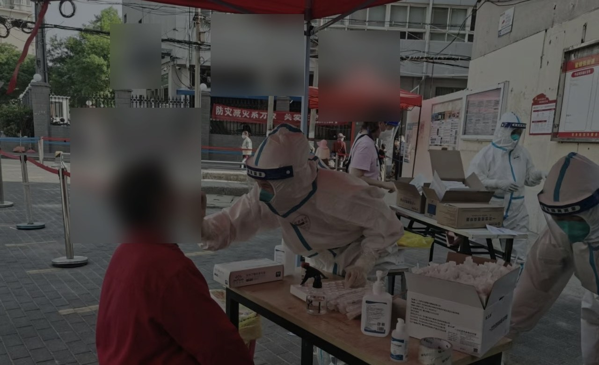
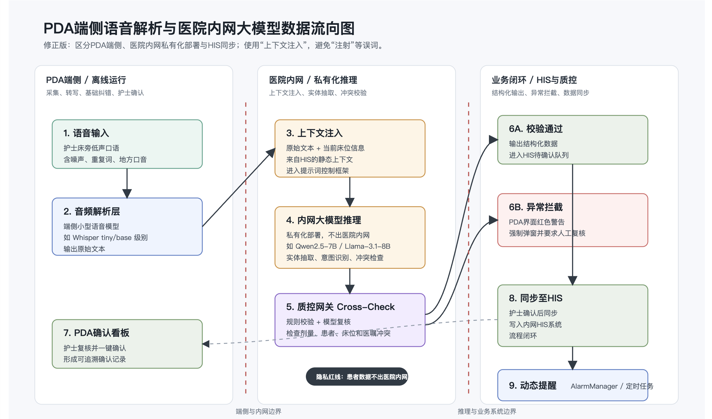
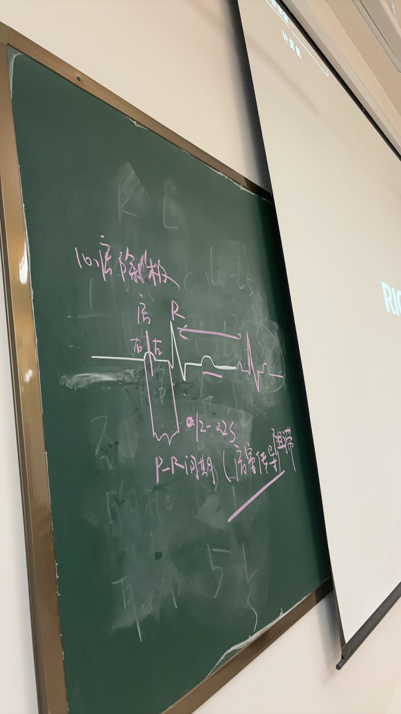

SIGNAL 01
Clinical Depth
从临床一线和真实医疗流程里理解 AI 该解决什么。
Medical AI · Clinical Workflow · Vibe Coding
田洁 Medical AI Builder
从学校到医院，再把问题做成可验证的 AI 原型。
Clinical Depth
从临床流程出发，连接模型能力与安全落地。

COVID-era frontline · 临床一线采样工作
Ward Round AI
查房语音，实时生成文本记录。
语音转写后完成结构化整理，并由医护人员复核。
01 / Live Transcript
查房实时记录
待机 · 本页面不保存音频
模拟数据 · 结果需人工复核
01Speech-to-Text
02Entity
03Structure
04Human Review
READY
等待整理查房记录
转写文本将被整理为可人工复核的记录草稿。
实体--
完整度--
需复核--
Run analysis to inspect entities
输出草稿
{
"status": "waiting",
"human_review": true
}
Evaluation Platform
通用评测报告生成平台
从标注数据、规则文档到 Bad Case 分析和五模块报告。
02
Evaluation Report Platform
上传标注主表或多张表，识别字段映射，生成结果分析表、Bad Case 表与评测报告。
01字段识别
02规则对齐
03Bad Case
04报告生成
样本量--
通过率--
Bad Case--
报告模块--
READY
等待生成评测报告
平台会先识别字段，再按规则统计错误类型，最后生成可下载的 PDF、Word、Markdown 和结果表。
- 字段映射：待识别
- 结果分析：待生成
- 报告正文：待生成
Featured Work
实习到岗助手
排班识别、院区到岗确认与异常提醒原型。
01
Student Duty Status Assistant
场景：医院实习期间，学生下夜班后可能正在休息，老师需要先判断状态。
- AI 排班识别
- 医院范围到岗
- 未到岗异常提醒
- 月度汇总
AI Lab
PDA 端护理口述记录结构化助手
口述转写、结构化抽取、安全校验与人工确认。
Live Prototype
护士口述 → 结构化记录
概念演示：模拟转写与结构化过程，不接入真实患者数据或医嘱系统。
01语音转写ASR Transcript
02实体抽取Clinical NER
03冲突检查Safety Gate
04人工确认Human Review
READY
等待解析口述内容
- 床位
- --
- 任务
- --
- 时间
- --
- 提醒
- --
Technical Flow 查看隐私与安全流程

患者数据不出院内网络，模型输出必须经过质控与人工确认。

Thinking
我关心 AI 能不能进入真实流程。
真实场景
从临床、教学和管理中的具体摩擦出发。
人工确认
医疗 AI 应该辅助判断，而不是越过人做最终决定。
安全边界
隐私、权限、留痕和异常拦截要先于炫技。
快速验证
先用原型把想法跑通，再讨论复杂系统。